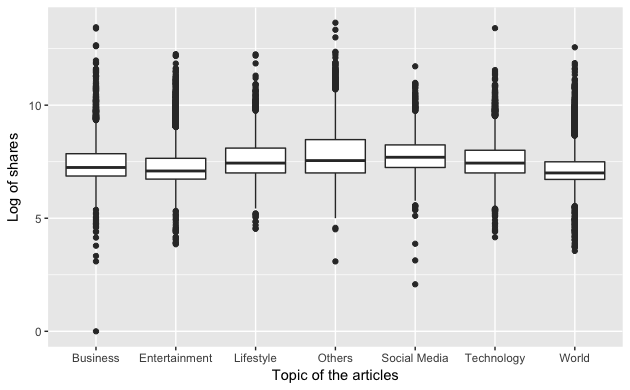

Still having trouble drawing people's attention to your article ? Deleting a few lines of words, adding one or two pictures in between and pushing back by a few hours to release your article will do the trick ! Now it's time to discover these little secrets that will make your articles more popular online.
BACKGROUND
Facebook has recently been accused for spreading fake news about the 2016 U.S presidential election, which is said to influenced the outcome dramatically. Putting aside the political issues involved, this can be seen as a perfect example of the important role social media plays in information sharing. Facebook and twitter together have about 2 billion active users, roughly a quarter of the world's population. Any piece of information being shared can have a huge impact if it successfully draws these people's attention. Therefore, it is meaningful to discover what kinds of news and articles tend to be more popular among social media.
While the content of an article is always the decisive factor to determine whether it is popular or not, people often ignore other factors that also influence the popularity of an article. For example, people tend to become impatient when given a relatively long article. Also, a news with pictures, videos and links is more likely to be popular than those which do not have these. These factors can be collected as attributes of articles and be quantified and processed using statistic methods, which generate a great amount of meaningful discoveries, some of which may be quite different than what we used to think.
As the final project of CSE 6242 (instructed by Professor Polo Chau), our aim is to analyze and determine important attributes of online articles that will affect their popularity on social media. Specifically, the dataset we are working on is a heterogeneous set of features about article articles published on Mashable in a period of two years, then we make meaningful combination of attributes and anaylze the relationship between them and the number of shares on social network. Moreover, we will learn from the existing datasets and use machine learning to predict the popularity of new articles. The whole website therefore will serve as a comprehensive project for literature analysis and can cater to a large market.
RESEARCH
When should I publish a certain type of article?
Keywords: Releasing /publication time; Category;This research reflects the relationship between the popularity of different kinds of articles and the publication time. The result is shown in a heatmap where the x-axis represents categories and y-axis shows different days in a week.
Interesting facts:
1. Monday is not as bad as you thought it would be. People get back to work physically but their minds may still enjoy the past weekends. So it is not surprising to see them grabing every opportunity to take a break and find something interesting on their cell phones.
2. Also, Friday is not as good as you thought. You might think people finally get time to read something on a Friday night. Well the truth is: they may not be sober enough to do that.
3. Wednesday could be the most stressful day in a week as people do not even care about what's happenning in the world AT ALL!
4. Actually it seems that people do not care about the world at anytime :( So if my boss asked me to write something about it, I would tag it as a different category.
4. No business on Friday.
5. "We don't have time to read on Thursday since we have already behind our schedules for this week and the boss is not happy about that."
The graph represents the number of articles published in different categories. x-axis is the category of the article, y-axis is the weekday and z-axis is the number of articles of particular article published on the particular day. The darker the color means larger number of articles.
Interesting facts:
1. In general, more articles are published on workday than weekend. People usually work on workday to publish articles.
2. Compared with all categories, lifestyle and social media category have least number of published articles while world category has most most published articles. People prefer to publish articles related to politics and military news.
3. Compared with each weekday, articles of social media category has least publishment on Sunday. Articles of world category has most publishment on Thursday.
Does all potential predictors are independent to each other and relevant to our dependent variable?
Keywords: CorrelationWe plot the heatmap of correlation between each variable to see the dependency. According to the heatmap, each variable has more or less correlation with other variable. The result would be useful for the regression analysis.
Does category and publishing days of news matters?
Keywords: Category; Publication dateWe plot the response variable shares by histogram to check its distribution and figured out it is heavily right skewed. Thus, after transforming shares by log function to reduce the skewness, we draw the box plots of log_shares vs categories of articles and log_shares vs the publishing days respectively as follows,

Box plot of log_shares vs categories
From the box plot, we can tell that the popularity of social media is slightly higher and the median of log_shares of world is lowest, but the general popularity among the different categories are almost the same. The central rectangle spanning from the first quartile to the third quartile is called the interquartile range (IQR). IQR of the category others is largest, since others may included some very different categories of articles and the variance of the log_shares is large, while IQR of World is smallest, which means the log_shares distribution of the category of World is more concentrated and the predictive results will be more reliable.
Box plot of log_shares vs the publishing days
From the box plot, publishing day doesn’t show much influence on shares. It can be a very good news for the website: Mashable enjoys very stable popularity and has a large population of returning readers. We can also learn that the distribution of the log_shares on Sunday is more concentrated and the distributions are all a bit skewed.
Data distribution
Keywords: A lot!We plot histograms to check the distribution of ten variables. Some variable distributes uniformly, such as global_subjectivity and global_sentiment_polarity. Some variable distributes partially to one side, such as global_rate_negative_words and rate_positive_words.